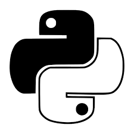
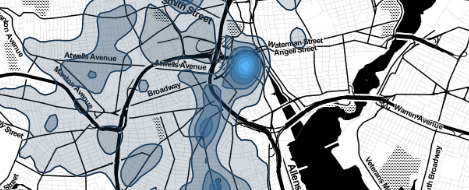
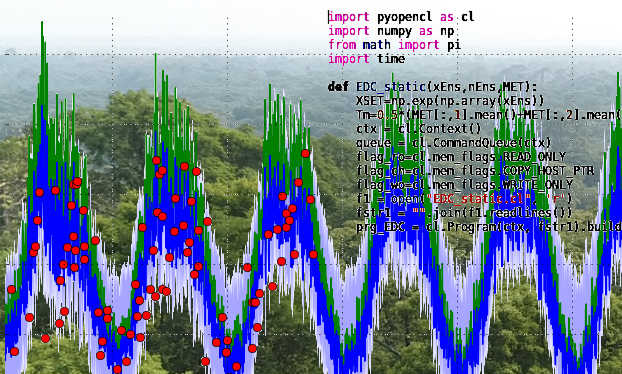

Skills
languages
- python
- matlab
- fortran
- C
- bash
- R
- kotlin
- html
- LATEX

python- numpy
- matplotlib
- pandas
- numba
- sklearn
- pyopencl
- dash
- tensorflow
- eolearn
softwares
- spyder
- matlab
- Visual code
- Rstudio
- Android studio
- Libre/MS Office
- git
- Wordpress
topics
- Data assimilation
- Fluid dynamics/Meteorology
- Differential geometry
- Probability
- Machine learning
- Optimization
- Scientific calculus
- Modelisation
- Algorithmics
soft skills
- Autonomy
- Adaptability
- Creativity
- Critical thinking
- Problem solving
- Communication english/french
- Versatility
- Teamwork
Interests
- City council member
- Music, instrument making
- Computing, linux
- Building restauration
- Preservation of heritage
- Hiking
Experience

2020--2022
Visiting researcher
2017--2020
PostDoc researcher
Development of bayesian ensemble filters for point processes. Application to crime modeling, neural networks, communication networks (publication, preprint).
Collaboration with Earthi (UK) to produce a preliminary study on the use of very high resolution satellite imagery to provide the World Bank with tools for an automated assessment of forest degradation.
Collaboration with the National Physics Laboratory (NPL, UK) to evaluate machine learning techniques to produce insurance risk maps associated with land subsidence.

PostDoc researcher
Within the National Center for Earth Observation (NCEO, UK), development of variational methods to study the model data fusion problem for carbon cycle models, quantify the uncertainty of carbon stocks and evaluate the information content of observation fluxes (publication).
PhD
Complex and Contact geometry in geophysical fluid dynamics
MSc
HydroInformatics
Projects
a non-exhaustive overview of the topics, methods and tools used during my research, personal activities and civic engagements. Each project will be described in more details in a post, please revisit this page to find out more.
Ensemble filters for point processes
Development of bayesian ensemble filters for the data assimilation of point processes, application to crime modeling, neural network, Covid19 outbreak...
Data Assimilation
Ensemble Filter
Hawkes process
Uncertainty quantification
python
pyopencl
numpy
dash
pandas
numba
matlab
Shift scheduling and data analysis
Analysis of calls for services data from the Providence Police Department to optimize shift scheduling and police patrols dispatch.
Queuing Theory
Integer Programming
data processing
R
ggplot2
dyplr
rmarkdown
Quantification of the carbon cycle for terrestrial ecosystems
Development of variational tools to evaluate the information content of different observation fluxes in carbon cycle models.
Data Assimilation
4DVAR
Monte Carlo Markov Chains
Regularization
Information Content
Uncertainty Quantification
Python
matlab
VHR satellite imagery and forest degradation
Preliminary study to evaluate the benefits of using very high resolution satellite imagery together with a terrestrial ecosystem carbon cycle model to monitor and detect forest degradation.
Satellite Imagery
Tipping Points
Carbon Cycle
Forest Degradation
4DVAR
Uncertainty Quantification
python
eolearn
numpy
geopandas
sentinelhub
matlab
Subsidence and insurance risk
Using insurance claims history and LiDAR elevation data together with machine learning techniques we evaluated insurance risks associated with land subsidence phenomenon.
Data Processing
Machine Learning
Land Subsidence
Insurance Risk
python
sklearn
scipy
pyplot
shapely
Civic engagement and association
City council elected and member of an association that seeks to preserve the Hospitaller Commandery in Condat-sur-Vézère.
Liberté
Egalité
Fraternité
Music and craftmanship
Guitar player and instrument maker, piano beginner.
L. v. Beethoven
Django Reinhardt
plane
chisel
japanese saw
Titebond
shellac
Building restauration
Multiple historic buildings restorations.